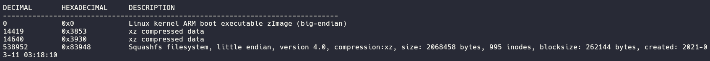
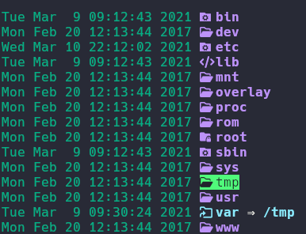

The Needle
Created: July 31, 2025 3:38 PM Difficulty: Very Easy Category:
hardware
This challenge provides us a .bin file, which represents
a Linux Kernel ARM boot executable. This file could be analyzed with
binwalk getting the following output

Here we are interest on the Squashfs filesystem which
could be extracted with dd and the following command
dd if=firmware.bin of=filesystem.squashfs skip=538952 bs=1
where if refer to the input file, of
identify the output file, the skip flag indicates from
where start to extract the file and the bs set the reading
bytes as 1. When this command is run we get an .squashfs
file that we could analyze using unsquashfs command getting
finally the filesystem.

At this point we need to found some credentials but we need to locate
the script dedicated for login for that we could make a recursive search
and filtering by the word login , it could be
grep -r . -e login
Analyzing the output we found the following command
telnetd -l "/usr/sbin/login" -u Device_Admin:$sign which
gave us the hint to search for the “variable” sign (you
could use find . -name sign) getting the file where the
password is stored.
At this point we could connect to the HTB endpoint to search the
flag.
Home